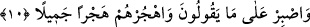

korkacak olursa Allah’ı kendisine vekil edinsin. Çünkü Allah ondan her türlü kötülüğü
savacak, karşısına hayr ve rızkın kapılarını açacaktır.
10. Onların (müşriklerin) söylediklerine katlan ve onlardan güzellikle ayrıl.
“Onların söylediklerine katlan” Kureyş’in Allah hakkında, senin ve Kur’an’ın
hakkında söyledikleri içinde hiçbir hayır olmayan hurafe ve hezeyanlarına sabret.
Kureyş, Allah hakkında onun ortağı, eşi ve çocuğu olduğu iddiâsında bulunurlarken
Peygamber (s.a.) Efendimiz hakkında onun sihirbaz, şâir, kâhin ve mecnûn olduğunu
ileri sürmüşler. Kur’an için ise bunun eskilerin masalları ve benzeri lâflar etmişlerdi.
“Onlardan güzellikle ayrıl.” Bu ifâde yukarda sabrı tavsiye eden emri pekiştiren bir
ifâdedir. Yâni; kalbinle hevâ ve hevesinle onlardan ayrılmak, onları idâre etmek, onlara
karşı durmamak ve işlerini rablerine havâle etmek sûretiyle onları güzelce terket.
Nitekim bunu âyetin devamı çok güzel şekilde ifâde ediyor.
Râğıb İsfahânî “terketmek” şeklinde tercüme edilen “hecr” kelimesini şöyle
açıklıyor: “Hecr ve hicran”; bir insanın başkasından beden veya diliyle ya da kalbiyle
ayrılması demektir. Allah Teâlâ’nın, “onlardan güzellikle ayrıl” ifâdesi bu üç çeşit
telkînin üçüne de delâlet edebilir. Bu âyet-i kerîme onlara iltifatla muâmele yönünün
araştırılmasıyla birlikte mümkün mertebe bu üç ihtimale delâlet etmektedir. Hikmet
sâhibi bilge kişiler şöyle derler: Bir fırsatını buluncaya kadar düşmana karşı -onu idâre
ederek- silahlan:
İki dünyanın da rahatı şu iki kelimenin tefsirinden ibârettir:
Dostlara iltifat etmek, düşmanlarla iyi geçinmek.
11. Nimet içinde yüzen o yalancıları bana bırak ve onlara biraz mühlet ver.
“Nimet içinde yüzen o yalanlayıcıları bana bırak.” Onların durumlarını bana havâle
et. Çünkü ben onlara karşı sana yeterim. Daha önce Kalem sûresinde bu kısım
açıklanmıştı.
Yalanlayıcılar anlamına gelen “Mükezzibîn” kelimesi mef’ûlü meah olarak mansub
olabilir. Buna göre âyetin mânâsı; “sen beni onlarla başbaşa bırak” demektir. Nitekim
âyetin zâhirî mânâsı budur. Ancak bunun yanında “vav”, atıf harfi olarak almamız da
mümkündür. Eğer böyle tefsir yapacak olursak âyetin mânâsı; sen beni hikmetimin
gereği olarak yapacağım şeyle başbaşa bırak, seni ve Ku’an’ı yalanlayanları bırak. Bu